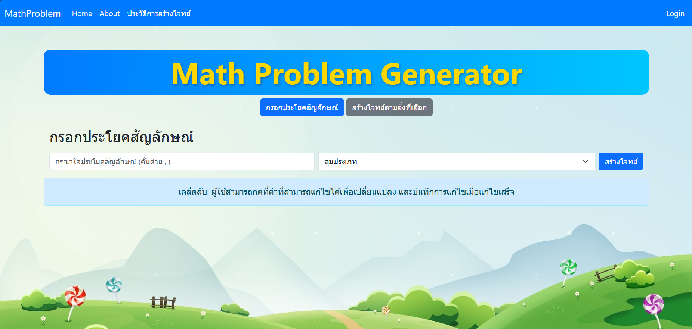

Project Overview
โครงงานนี้เป็นเว็บแอปพลิเคชันที่ช่วยในการสร้างโจทย์ปัญหาทางคณิตศาสตร์จากประโยคสัญลักษณ์ โดยผู้ใช้งานสามารถป้อนประโยคสัญลักษณ์ทางคณิตศาสตร์ แล้วระบบจะสร้างโจทย์ปัญหาที่มีความหมายเดียวกันในรูปแบบประโยคมาให้ ซึ่งเหมาะสำหรับใช้ฝึกทักษะการแก้โจทย์ หรือใช้เป็นสื่อการเรียนการสอน
My Responsibilities
- พัฒนาและจัดการฟังก์ชันสำหรับสร้าง แก้ไข และบันทึกโจทย์ปัญหาคณิตศาสตร์
- ออกแบบและพัฒนา UI ของเว็บแอปพลิเคชันให้ใช้งานง่าย ยืดหยุ่น และรองรับผู้ใช้จริง
- วางโครงสร้างและจัดการฐานข้อมูลสำหรับจัดเก็บข้อมูลโจทย์
- รับฟังและปรับปรุงระบบตามคำแนะนำจากอาจารย์ที่ปรึกษา เพื่อให้ตอบโจทย์ทั้งด้านการใช้งานและการออกแบบ
หน้าหลัก
เป็นเว็บแอปพลิเคชันที่ช่วยในการสร้างโจทย์ปัญหาทางคณิตศาสตร์จากประโยคสัญลักษณ์ โดยจะมีเมนูให้เลือกว่าจะสร้างโจทย์โดยการกรอกประโยคสัญลักษณ์ หรือสุ่มโจทย์จากข้อมูลที่เลือกไว้